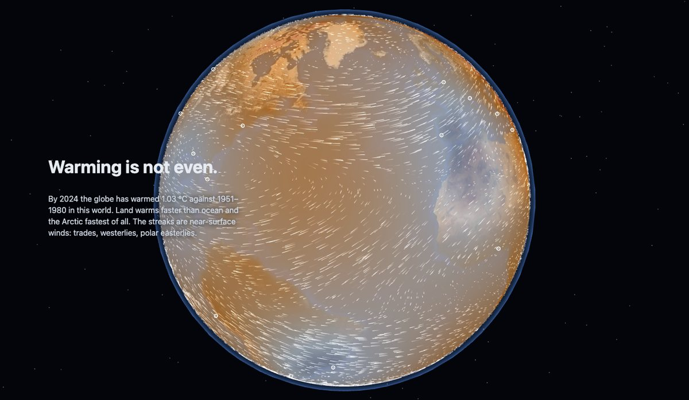
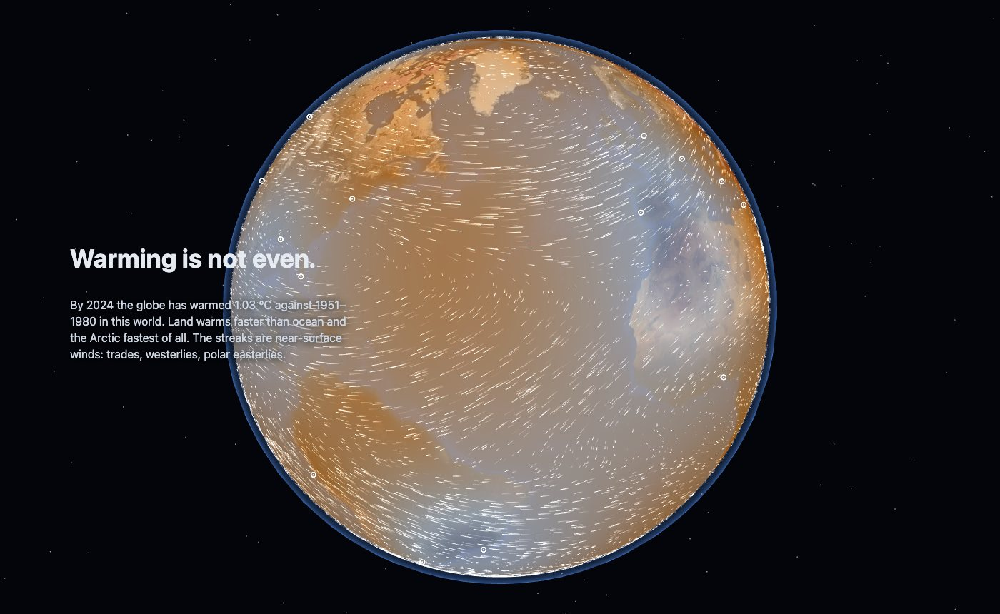
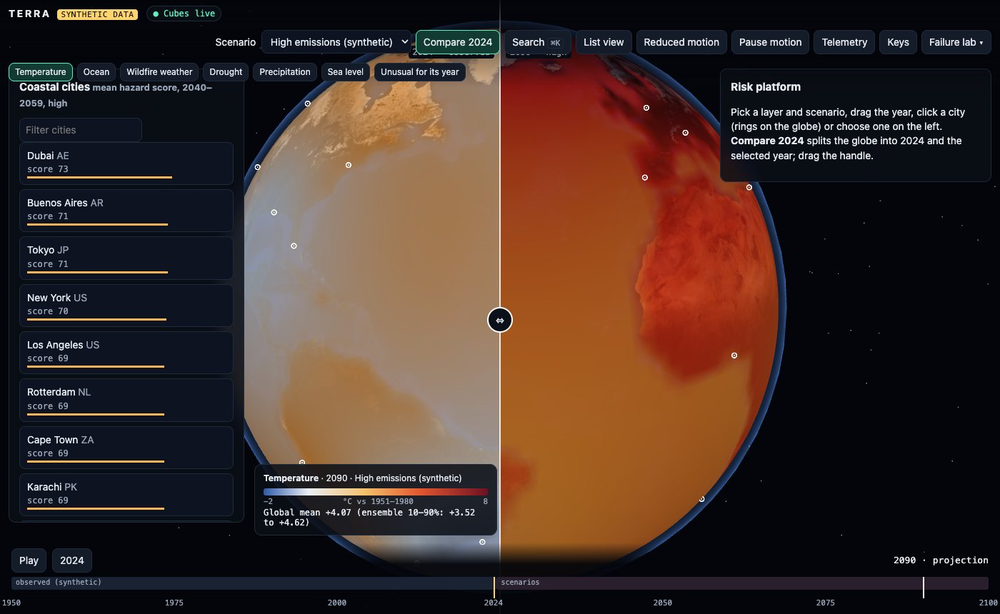
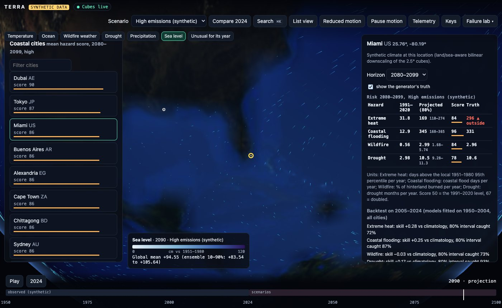
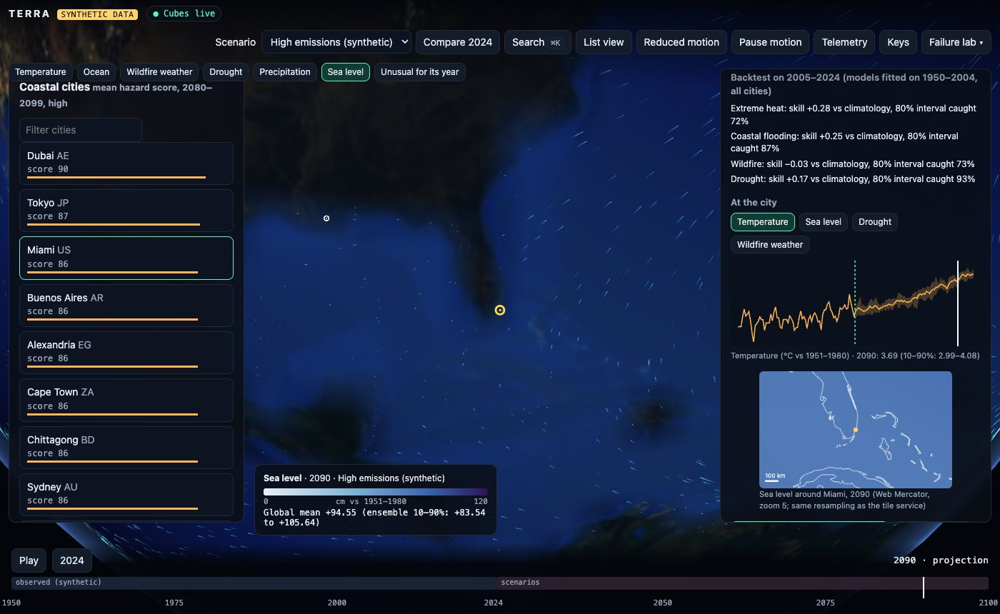
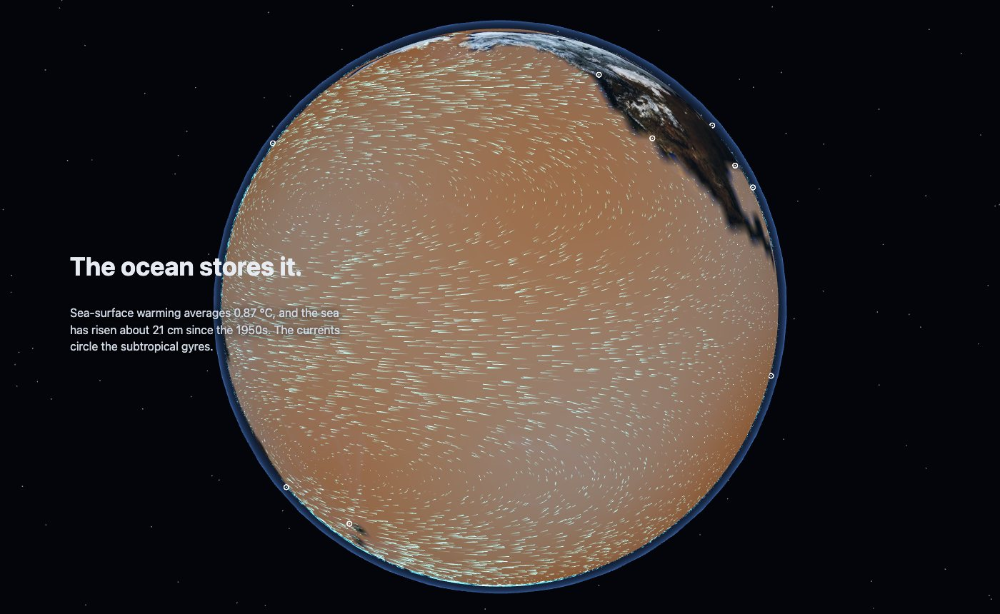
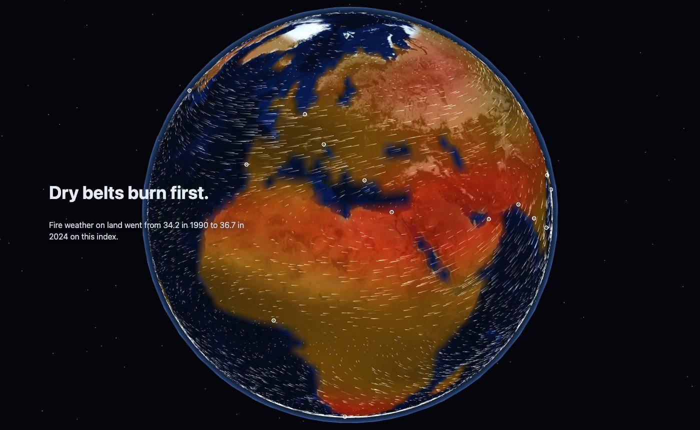

TypeScript · three.js · climate risk modelling · 2026-10
Can a Model Fitted to the Past See the Heat Coming?
A motion-first climate digital twin on synthetic climate cubes: scroll down from orbit through temperature, ocean and wildfire, scrub 1950 to 2100 under three scenarios, dive to a coastal city, compare present and future with a split shader, and export a risk summary. Four hazard models are scored on years they never saw; the heat model's 80% interval missed the generator's true future in 111 of 336 projections, because the past it learned from was too gentle to show the curve.

Built from blueprint 03 of a written build book (Volume V, motion-first products) as one vertical slice. The climate is synthetic: every field comes from a generator in the repository with realistic shapes (polar amplification, land warming faster than ocean, wet-get-wetter, accelerating sea level), and the values attached to real city names are not projections for those cities. The only outside data are Natural Earth land polygons (public domain). Not built: real reanalysis or model data, CesiumJS, deck.gl and MapLibre, Zarr/COG storage, Dask/Ray, the nine-service split, Terraform and cloud deployment, single sign-on, custom-parameter scenarios.
01 — The problem
Climate data is powerful and hard to use: the gridded fields are large, the scenarios branch, the uncertainty is easy to drop, and a risk number for a city is only as good as the model that turned climate into hazard. Can an interactive twin make the planet legible from orbit down to one coast, and be honest about how much its hazard models can be trusted?
The build book's rule for this volume is that the website is the product: motion has to carry state, time and causality. Blueprint 3 of ten, built as its demo scenario end to end.
02 — What I built
A Next.js site that runs entirely in the browser, plus a Fastify API on PostGIS behind the same interface, started by one docker compose up.
- Synthetic climate cubes on a 2.5° grid: six variables, 1950–2100, three scenarios with ten ensemble members each, computed on demand in a Web Worker (5 ms a field).
- A scroll documentary whose chapters move the camera and morph the globe's material from one dataset to the next, with winds and ocean currents advected on the GPU.
- A risk platform: continuous year scrubber, layers and scenarios, city profiles with a downscaled regional Mercator map, a present/future split shader, an "unusual for its year" anomaly layer and a one-page summary export.
- Four hazard models, each calibrated separately on 1950–2004 and backtested on 2005–2024, with projections that carry ensemble and parameter uncertainty.
- An API with XYZ tiles, a PostGIS region lookup, versioned and reproducible scenario runs, tenant isolation, idempotency and an audit chain.
03 — How it was built
- 01
Climate cubes that are functions, not files
Every value is a pure function of variable, year, scenario and ensemble member. Global warming follows a trajectory per scenario (+1.7, +2.9 and +4.7 °C by 2100 against 1951–1980), spatial patterns are rescaled so their area mean stays on that trajectory, and internal variability is a set of large-scale waves with year-to-year AR(1) amplitudes per member. Member 0 is the one observed past; members 1–10 diverge after 2024. Because the cube is code, the browser and the API compute identical numbers and the public demo ships 0.9 MB of fixtures instead of gigabytes.
const t = (G * tempPattern(lat, land)) / tNorm(ctx) + (0.45 + 0.75 * land + 0.6 * |lat|/90) * noise(member, year, x, y); - 02
A story that becomes the product
Five authored chapters, stored as data, scroll over one persistent canvas: orbit, temperature with winds, ocean with currents, wildfire weather, and 2090. Scroll position drives both the camera and a value-space blend between the two chapters' datasets in the overlay shader, so the globe's material changes rather than a layer being swapped. Winds and currents are 16,384 particles advected through a velocity texture in ping-pong float render targets and drawn as streaks along the local flow. Under reduced motion the chapters snap and the particles are off.
- 03
Continuous time on the GPU
The worker computes whole years (an ensemble frame costs 40–130 ms); the shader blends the two years around the slider position, so dragging is continuous and playback costs nothing extra. An early version requested frames from the render loop and froze when a browser throttled requestAnimationFrame; frames now follow state changes, which is also the book's rule that business logic must not hang off animation callbacks. First interactive was 277 ms on localhost against a 3.5 s budget, at 60 FPS.
- 04
Four hazard models, scored on years they never saw
Each city has a synthetic observed record drawn from hidden true response functions: extreme-heat days (relative to the local 1951–1980 95th percentile), coastal flood days, burned area and drought months. Each hazard gets its own model (quasi-Poisson, lognormal, binomial), fitted on 1950–2004 and scored on 2005–2024 against a climatology baseline. Heat skill +0.28, flooding +0.25, drought +0.17, and wildfire −0.03: no better than climatology, because the warming signal in those twenty years is small next to the noise. The platform shows that number instead of hiding it.
- 05
The miss the intervals could not see
Projections average 20-year windows over ten members and draws of the fitted coefficients, giving an 80% interval and a 0–100 score. The generator's truth is shown only to judge them. For heat the truth sits outside the interval in 111 of 336 projections, almost all above it: the true response curves upward, and a model fitted to a past with about 1 °C of warming cannot see the curvature. In Miami, 2080–2099, high scenario, the model says 169 days (110–274); the truth is 296. The intervals cover ensemble spread and parameter uncertainty, not model-structure error, and the summary says so.
- 06
From globe to coast
Clicking a city ring (a ray to the unit sphere, nearest city within 800 km) flies the camera down to it. The profile resamples the cube onto Web Mercator with land/sea-aware bilinear downscaling under Natural Earth coastlines, the same resampling the tile service uses. The split shader puts 2024 on the left of a draggable handle and the selected year on the right; the export writes a self-contained, watermarked one-page summary.
- 07
The same twin behind an API
In Docker the site reads its catalog, profiles and summaries from a Fastify API on PostGIS: XYZ tiles as PNG or JSON, a point-in-region lookup with ST_Contains on 60 km city buffers, scenario runs that are versioned and reproducible (the same inputs give the same result hash), row-level security per tenant with the built-in scenario families readable by all, idempotency keys, a hash-chained audit log, rate limits and OpenTelemetry spans. The failure built in is the climate-cube service going down: the globe keeps its last frame, the client backs off, and the next frame arrives when it returns.
04 — Results
The demo. The temperature chapter with near-surface winds advected on the GPU:

Present and future with the split shader (2024 left, 2090 high scenario right; global mean +4.07 °C, 10–90% across members +3.52 to +4.62):

Miami, 2080–2099, high scenario, with the generator's truth shown:


| Skill | Truth in 80% | |
|---|---|---|
| Heat | +0.28 | 225 / 336 |
| Flooding | +0.25 | 272 / 336 |
| Wildfire | −0.03 | 267 / 336 |
| Drought | +0.17 | 295 / 336 |
The ocean and wildfire chapters:


Checks. Tile bounds and pixel round trips, interpolation property tests, GLMs recovering known coefficients, the fixtures reproducing from the pipeline: 99% statement coverage of the domain code. Every API response validated against the OpenAPI document; another tenant gets 404 on a scenario run and row-level security blocks a query with no WHERE clause. Playwright walks the whole scenario, reduced motion, keyboard only, the outage, a lost GPU context and visual baselines.
Performance. First interactive 277 ms on localhost (budget 3.5 s), 60 FPS. The API on one process: 505 requests a second at p95 114 ms.
05 — What I'd do next
- Add a structural term to the heat model, or blend it with a physically shaped one, and check whether the truth then falls inside the interval; then widen intervals by a model-structure term learned from held-out warmer years.
- Read real reanalysis and projection chunks (Zarr/COG) behind the same frame and tile interfaces, with provenance per chunk.
- Custom scenarios with a warming multiplier, computed and versioned like the built-in families.
- A statistical downscaler (elevation, distance to coast) behind the downscaling interface, scored against held-out stations.